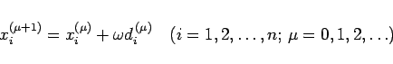
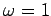
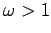
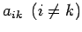

Inhalt Index DeskTop Bronstein

 Numerische Mathematik Numerische Lösung von Gleichungssystemen Lineare Gleichungssysteme Iteration in Gesamt- und Einzelschritten
Numerische Mathematik Numerische Lösung von Gleichungssystemen Lineare Gleichungssysteme Iteration in Gesamt- und Einzelschritten


Die Iterationsvorschrift des GAUSS-SEIDEL-Verfahrens (19.51) läßt sich auch in der sogenannten Korrekturform
|  | (19.53) |
übergeht, kann man versuchen, die Konvergenzeigenschaften des Einzelschrittverfahrens zu verbessern. Es läßt sich zeigen, daß Konvergenz nur für
möglich ist. Für  erhält man das Einzelschrittverfahren. Im Fall  spricht man von Überrelaxation, die zugehörigen Iterationsverfahren werden als SOR-Verfahren (successive over relaxation) bezeichnet. Die Bestimmung optimaler Relaxationsparameter ist nur für einige spezielle Matrizentypen explizit möglich.
Die Anwendung iterativer Methoden zur Lösung linearer Gleichungssysteme ist vor allem angebracht, wenn die Hauptdiagonalelemente aii der Koeffizientenmatrix gegenüber den übrigen Elementen  betragsmäßig stark überwiegen oder wenn durch Umstellung oder geeignete Kombination der einzelnen Gleichungen eine solche Anordnung erreicht werden kann.